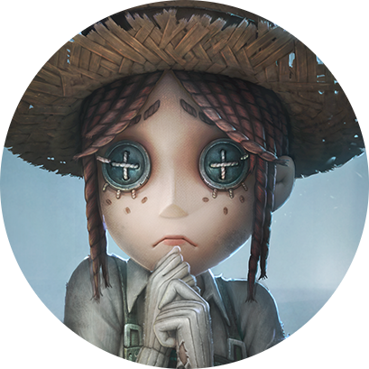
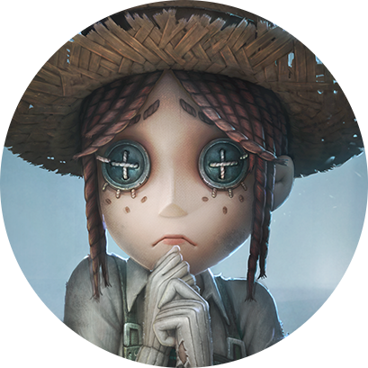

關於藍弟
在此部落格中,將分享藍弟在工作上及生活中的點滴。
|  | Landy Wu國立臺北教育大學第五人格玩家 |
我是一位第五人格玩家，專注打第五人格和跟玩第五人格的女生聊天，並致力於重度遊玩與深度聊天 在遊戲及聊天應用上的創新研究與應用，並熱愛分享知識，鼓勵女生在遊戲與實踐中成長，追求卓越。
此外，我也熱愛睡覺、抱怨與吃宵夜，希望將藝術與科技結合，為遊戲人生與研究注入更多元的靈魂與視野。
在此部落格中,將分享藍弟在工作上及生活中的點滴。
|  | Landy Wu國立臺北教育大學第五人格玩家 |
我是一位第五人格玩家，專注打第五人格和跟玩第五人格的女生聊天，並致力於重度遊玩與深度聊天 在遊戲及聊天應用上的創新研究與應用，並熱愛分享知識，鼓勵女生在遊戲與實踐中成長，追求卓越。
此外，我也熱愛睡覺、抱怨與吃宵夜，希望將藝術與科技結合，為遊戲人生與研究注入更多元的靈魂與視野。
| Dates | Work |
|---|---|
| 2019-2024 | 第五人格玩家 |
| 2023-2024 | 國立臺北教育大學資訊科學系 |
| 第五人格 | ⭐ |
| 跟女生聊天 | ⭐ |
| 睡覺 | ⭐⭐⭐⭐⭐⭐⭐⭐⭐⭐ |